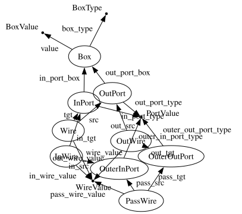
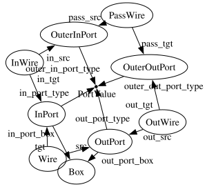

Wiring Diagrams as Attributed C-Sets
Catlab supports many different flavors of diagrammatic syntax. These support the different combinatorial data structures that we use for representing categorical constructions. We will discuss DirectedWiringDiagrams, UndirectedWiringDiagrams, and CPortGraphs in this document.
using Catlab.Theories, Catlab.CategoricalAlgebra
using Catlab.WiringDiagrams, Catlab.Programs, Catlab.Graphics
using Catlab.Graphics: Graphviz
draw(d::WiringDiagram) = to_graphviz(d,
orientation=LeftToRight,
labels=true, label_attr=:xlabel,
node_attrs=Graphviz.Attributes(
:fontname => "Courier",
),
edge_attrs=Graphviz.Attributes(
:fontname => "Courier",
)
)
draw(uwd::AbstractUWD) = to_graphviz(uwd, junction_labels=:variable, box_labels=:name)draw (generic function with 2 methods)Directed Wiring Diagrams
DWDs are used to represent the morphisms in a symmetric monoidal category. You can get started by presenting a FreeSymmetricMonoidalCategory with the @present macro.
@present P(FreeSymmetricMonoidalCategory) begin
(A,B,C,D)::Ob
f::Hom(A,B)
g::Hom(B,A)
h::Hom(A⊗B, C)
k::Hom(C,D⊗A)
end
generators(P)8-element Vector{CategoryExpr{:generator}}:
A
B
C
D
f: A → B
g: B → A
h: A⊗B → C
k: C → D⊗AThese presentations are very syntactic objects and expose an API for manipulating expressions.
for g in generators(P)
"$g is a $(gat_typeof(g)) with arguments $(gat_type_args(g))"
endThe gat_typeof function computes the algebraic type of a term by analogy to Base.typeof which computes the Julia type of a value.
homs_P = filter(generators(P)) do g
gat_typeof(g) == :Hom
end4-element Vector{CategoryExpr{:generator}}:
f: A → B
g: B → A
h: A⊗B → C
k: C → D⊗AWhen the term is a Hom, you can get the domain and codomain of the morphism with the dom and codom functions.
map(homs_P) do f
"$f: $(dom(f)) → $(codom(f))"
end4-element Vector{String}:
"f: A → B"
"g: B → A"
"h: otimes(A,B) → C"
"k: C → otimes(D,A)"With the presentation you can build up morphism expressions using a formula syntax.
P[:h]⋅P[:k]\[h \cdot k : A \otimes B \to D \otimes A\]
This syntactic API is useful for manipulating terms in an arbitrary GAT and is the formal language of Catlab for representing and manipulating algebraic structures. However, when we want to work with big expressions in an SMC, the tree structure inherent to formulas is too verbose, and we want to move to a port-graph structure called DirectedWiringDiagrams. This gives us the benefits of combinatorial data structures like graphs with the right expressional power for representing the morphisms in an SMC.
wd = @program P (a::A, b::B) begin
c = h(a,b)
return k(c)
end
draw(wd)
-->
<!-- Title: G Pages: 1 -->
<svg width="154pt" height="75pt"
viewBox="0.00 0.00 154.00 75.00" xmlns="http://www.w3.org/2000/svg" xmlns:xlink="http://www.w3.org/1999/xlink">
<g id="graph0" class="graph" transform="scale(1 1) rotate(0) translate(4 70.78)">
<title>G</title>
<polygon fill="white" stroke="none" points="-4,4 -4,-70.78 149.94,-70.78 149.94,4 -4,4"/>
<!-- n0in1 -->
<!-- n0in2 -->
<!-- n0in1&%2345;>n0in2 -->
<!-- n1 -->
<!-- h -->
<g id="n1" class="node">
<title>n1</title>
<polygon fill="none" stroke="black" points="36.72,-9.79 36.72,-57.79 54.97,-57.79 54.97,-9.79 36.72,-9.79"/>
<text xml:space="preserve" text-anchor="start" x="41.72" y="-28.92" font-family="Courier,monospace" font-size="14.00">h</text>
</g>
<!-- n0in1&%2345;>n1 -->
<!-- A -->
<g id="e1" class="edge">
<title>n0in1:e&%2345;>n1:w</title>
<path fill="none" stroke="black" d="M0.72,-54.79C14.89,-54.79 19.11,-48.15 30.49,-46.28"/>
<polygon fill="black" stroke="black" points="30.36,-48.04 35.21,-45.91 30.09,-44.55 30.36,-48.04"/>
<text xml:space="preserve" text-anchor="middle" x="14.5" y="-37.04" font-family="Courier,monospace" font-size="14.00">A</text>
</g>
<!-- n0in2&%2345;>n1 -->
<!-- B -->
<g id="e2" class="edge">
<title>n0in2:e&%2345;>n1:w</title>
<path fill="none" stroke="black" d="M0.72,-12.79C14.89,-12.79 19.11,-19.44 30.49,-21.31"/>
<polygon fill="black" stroke="black" points="30.09,-23.03 35.21,-21.68 30.36,-19.54 30.09,-23.03"/>
<text xml:space="preserve" text-anchor="middle" x="14.5" y="-3.95" font-family="Courier,monospace" font-size="14.00">B</text>
</g>
<!-- n0out1 -->
<!-- n0out2 -->
<!-- n0out1&%2345;>n0out2 -->
<!-- n2 -->
<!-- k -->
<g id="n2" class="node">
<title>n2</title>
<polygon fill="none" stroke="black" points="90.97,-9.79 90.97,-57.79 109.22,-57.79 109.22,-9.79 90.97,-9.79"/>
<text xml:space="preserve" text-anchor="start" x="95.97" y="-28.92" font-family="Courier,monospace" font-size="14.00">k</text>
</g>
<!-- n1&%2345;>n2 -->
<!-- C -->
<g id="e3" class="edge">
<title>n1:e&%2345;>n2:w</title>
<path fill="none" stroke="black" d="M54.97,-33.79C68.59,-33.79 73.52,-33.79 84.56,-33.79"/>
<polygon fill="black" stroke="black" points="84.46,-35.54 89.46,-33.79 84.46,-32.04 84.46,-35.54"/>
<text xml:space="preserve" text-anchor="middle" x="69.01" y="-20.49" font-family="Courier,monospace" font-size="14.00">C</text>
</g>
<!-- n2&%2345;>n0out1 -->
<!-- D -->
<g id="e4" class="edge">
<title>n2:e&%2345;>n0out1:w</title>
<path fill="none" stroke="black" d="M109.22,-45.79C123.39,-45.79 127.61,-52.44 138.99,-54.31"/>
<polygon fill="black" stroke="black" points="138.59,-56.03 143.71,-54.68 138.86,-52.54 138.59,-56.03"/>
<text xml:space="preserve" text-anchor="middle" x="123" y="-36.95" font-family="Courier,monospace" font-size="14.00">D</text>
</g>
<!-- n2&%2345;>n0out2 -->
<!-- A -->
<g id="e5" class="edge">
<title>n2:e&%2345;>n0out2:w</title>
<path fill="none" stroke="black" d="M109.22,-21.79C123.39,-21.79 127.61,-15.15 138.99,-13.28"/>
<polygon fill="black" stroke="black" points="138.86,-15.04 143.71,-12.91 138.59,-11.55 138.86,-15.04"/>
<text xml:space="preserve" text-anchor="middle" x="123" y="-4.04" font-family="Courier,monospace" font-size="14.00">A</text>
</g>
</g>
</svg>
)
Catlab gives you the tools for drawing wiring diagrams. Visualization of wiring diagrams is the oldest part of Catlab and the original motivation for its development. The @program macro allows you to define wiring diagrams using a syntax that feels like Julia code.
wd = @program P (a::A, b::B) begin
c = h(a,b)
d,a₁ = k(c)
return d, f(a₁)
end
draw(wd)
-->
<!-- Title: G Pages: 1 -->
<svg width="208pt" height="79pt"
viewBox="0.00 0.00 208.00 79.00" xmlns="http://www.w3.org/2000/svg" xmlns:xlink="http://www.w3.org/1999/xlink">
<g id="graph0" class="graph" transform="scale(1 1) rotate(0) translate(4 75.24)">
<title>G</title>
<polygon fill="white" stroke="none" points="-4,4 -4,-75.24 204.19,-75.24 204.19,4 -4,4"/>
<!-- n0in1 -->
<!-- n0in2 -->
<!-- n0in1&%2345;>n0in2 -->
<!-- n1 -->
<!-- h -->
<g id="n1" class="node">
<title>n1</title>
<polygon fill="none" stroke="black" points="36.72,-14.25 36.72,-62.25 54.97,-62.25 54.97,-14.25 36.72,-14.25"/>
<text xml:space="preserve" text-anchor="start" x="41.72" y="-33.38" font-family="Courier,monospace" font-size="14.00">h</text>
</g>
<!-- n0in1&%2345;>n1 -->
<!-- A -->
<g id="e1" class="edge">
<title>n0in1:e&%2345;>n1:w</title>
<path fill="none" stroke="black" d="M0.72,-59.25C14.89,-59.25 19.11,-52.6 30.49,-50.73"/>
<polygon fill="black" stroke="black" points="30.36,-52.5 35.21,-50.37 30.09,-49.01 30.36,-52.5"/>
<text xml:space="preserve" text-anchor="middle" x="14.5" y="-41.49" font-family="Courier,monospace" font-size="14.00">A</text>
</g>
<!-- n0in2&%2345;>n1 -->
<!-- B -->
<g id="e2" class="edge">
<title>n0in2:e&%2345;>n1:w</title>
<path fill="none" stroke="black" d="M0.72,-17.25C14.89,-17.25 19.11,-23.9 30.49,-25.77"/>
<polygon fill="black" stroke="black" points="30.09,-27.49 35.21,-26.13 30.36,-24 30.09,-27.49"/>
<text xml:space="preserve" text-anchor="middle" x="14.5" y="-8.41" font-family="Courier,monospace" font-size="14.00">B</text>
</g>
<!-- n0out1 -->
<!-- n0out2 -->
<!-- n0out1&%2345;>n0out2 -->
<!-- n2 -->
<!-- k -->
<g id="n2" class="node">
<title>n2</title>
<polygon fill="none" stroke="black" points="90.97,-14.25 90.97,-62.25 109.22,-62.25 109.22,-14.25 90.97,-14.25"/>
<text xml:space="preserve" text-anchor="start" x="95.97" y="-33.38" font-family="Courier,monospace" font-size="14.00">k</text>
</g>
<!-- n1&%2345;>n2 -->
<!-- C -->
<g id="e3" class="edge">
<title>n1:e&%2345;>n2:w</title>
<path fill="none" stroke="black" d="M54.97,-38.25C68.59,-38.25 73.52,-38.25 84.56,-38.25"/>
<polygon fill="black" stroke="black" points="84.46,-40 89.46,-38.25 84.46,-36.5 84.46,-40"/>
<text xml:space="preserve" text-anchor="middle" x="69.01" y="-24.95" font-family="Courier,monospace" font-size="14.00">C</text>
</g>
<!-- n2&%2345;>n0out1 -->
<!-- D -->
<g id="e5" class="edge">
<title>n2:e&%2345;>n0out1:w</title>
<path fill="none" stroke="black" d="M109.22,-50.25C147.33,-50.25 158.01,-58.29 193.12,-59.17"/>
<polygon fill="black" stroke="black" points="192.94,-60.92 197.96,-59.23 192.98,-57.42 192.94,-60.92"/>
<text xml:space="preserve" text-anchor="middle" x="149.83" y="-41.38" font-family="Courier,monospace" font-size="14.00">D</text>
</g>
<!-- n3 -->
<!-- f -->
<g id="n3" class="node">
<title>n3</title>
<polygon fill="none" stroke="black" points="145.22,-3.62 145.22,-30.88 163.47,-30.88 163.47,-3.62 145.22,-3.62"/>
<text xml:space="preserve" text-anchor="start" x="150.22" y="-12.38" font-family="Courier,monospace" font-size="14.00">f</text>
</g>
<!-- n2&%2345;>n3 -->
<!-- A -->
<g id="e4" class="edge">
<title>n2:e&%2345;>n3:w</title>
<path fill="none" stroke="black" d="M109.22,-26.25C123.39,-26.25 127.61,-19.6 138.99,-17.73"/>
<polygon fill="black" stroke="black" points="138.86,-19.5 143.71,-17.37 138.59,-16.01 138.86,-19.5"/>
<text xml:space="preserve" text-anchor="middle" x="123" y="-8.49" font-family="Courier,monospace" font-size="14.00">A</text>
</g>
<!-- n3&%2345;>n0out2 -->
<!-- B -->
<g id="e6" class="edge">
<title>n3:e&%2345;>n0out2:w</title>
<path fill="none" stroke="black" d="M163.47,-17.25C177.09,-17.25 182.02,-17.25 193.06,-17.25"/>
<polygon fill="black" stroke="black" points="192.96,-19 197.96,-17.25 192.96,-15.5 192.96,-19"/>
<text xml:space="preserve" text-anchor="middle" x="177.51" y="-3.95" font-family="Courier,monospace" font-size="14.00">B</text>
</g>
</g>
</svg>
)
The input wires are declared as arguments to the program, and the output wires are declared as returns from the function. Variables that are not consumed or by another function or returned by the program are automatically dropped.
wd = @program P (a::A, b::B) begin
c = h(a,b)
d,a₁ = k(c)
return f(a₁)
end
draw(wd)
-->
<!-- Title: G Pages: 1 -->
<svg width="208pt" height="75pt"
viewBox="0.00 0.00 208.00 75.00" xmlns="http://www.w3.org/2000/svg" xmlns:xlink="http://www.w3.org/1999/xlink">
<g id="graph0" class="graph" transform="scale(1 1) rotate(0) translate(4 70.78)">
<title>G</title>
<polygon fill="white" stroke="none" points="-4,4 -4,-70.78 204.19,-70.78 204.19,4 -4,4"/>
<!-- n0in1 -->
<!-- n0in2 -->
<!-- n0in1&%2345;>n0in2 -->
<!-- n1 -->
<!-- h -->
<g id="n1" class="node">
<title>n1</title>
<polygon fill="none" stroke="black" points="36.72,-9.79 36.72,-57.79 54.97,-57.79 54.97,-9.79 36.72,-9.79"/>
<text xml:space="preserve" text-anchor="start" x="41.72" y="-28.92" font-family="Courier,monospace" font-size="14.00">h</text>
</g>
<!-- n0in1&%2345;>n1 -->
<!-- A -->
<g id="e1" class="edge">
<title>n0in1:e&%2345;>n1:w</title>
<path fill="none" stroke="black" d="M0.72,-54.79C14.89,-54.79 19.11,-48.15 30.49,-46.28"/>
<polygon fill="black" stroke="black" points="30.36,-48.04 35.21,-45.91 30.09,-44.55 30.36,-48.04"/>
<text xml:space="preserve" text-anchor="middle" x="14.5" y="-37.04" font-family="Courier,monospace" font-size="14.00">A</text>
</g>
<!-- n0in2&%2345;>n1 -->
<!-- B -->
<g id="e2" class="edge">
<title>n0in2:e&%2345;>n1:w</title>
<path fill="none" stroke="black" d="M0.72,-12.79C14.89,-12.79 19.11,-19.44 30.49,-21.31"/>
<polygon fill="black" stroke="black" points="30.09,-23.03 35.21,-21.68 30.36,-19.54 30.09,-23.03"/>
<text xml:space="preserve" text-anchor="middle" x="14.5" y="-3.95" font-family="Courier,monospace" font-size="14.00">B</text>
</g>
<!-- n0out1 -->
<!-- n2 -->
<!-- k -->
<g id="n2" class="node">
<title>n2</title>
<polygon fill="none" stroke="black" points="90.97,-9.79 90.97,-57.79 109.22,-57.79 109.22,-9.79 90.97,-9.79"/>
<text xml:space="preserve" text-anchor="start" x="95.97" y="-28.92" font-family="Courier,monospace" font-size="14.00">k</text>
</g>
<!-- n1&%2345;>n2 -->
<!-- C -->
<g id="e3" class="edge">
<title>n1:e&%2345;>n2:w</title>
<path fill="none" stroke="black" d="M54.97,-33.79C68.59,-33.79 73.52,-33.79 84.56,-33.79"/>
<polygon fill="black" stroke="black" points="84.46,-35.54 89.46,-33.79 84.46,-32.04 84.46,-35.54"/>
<text xml:space="preserve" text-anchor="middle" x="69.01" y="-20.49" font-family="Courier,monospace" font-size="14.00">C</text>
</g>
<!-- n3 -->
<!-- f -->
<g id="n3" class="node">
<title>n3</title>
<polygon fill="none" stroke="black" points="145.22,-8.17 145.22,-35.42 163.47,-35.42 163.47,-8.17 145.22,-8.17"/>
<text xml:space="preserve" text-anchor="start" x="150.22" y="-16.92" font-family="Courier,monospace" font-size="14.00">f</text>
</g>
<!-- n2&%2345;>n3 -->
<!-- A -->
<g id="e4" class="edge">
<title>n2:e&%2345;>n3:w</title>
<path fill="none" stroke="black" d="M109.22,-21.79C122.84,-21.79 127.77,-21.79 138.81,-21.79"/>
<polygon fill="black" stroke="black" points="138.71,-23.54 143.71,-21.79 138.71,-20.04 138.71,-23.54"/>
<text xml:space="preserve" text-anchor="middle" x="123.26" y="-8.49" font-family="Courier,monospace" font-size="14.00">A</text>
</g>
<!-- n3&%2345;>n0out1 -->
<!-- B -->
<g id="e5" class="edge">
<title>n3:e&%2345;>n0out1:w</title>
<path fill="none" stroke="black" d="M163.47,-21.79C177.09,-21.79 182.02,-21.79 193.06,-21.79"/>
<polygon fill="black" stroke="black" points="192.96,-23.54 197.96,-21.79 192.96,-20.04 192.96,-23.54"/>
<text xml:space="preserve" text-anchor="middle" x="177.51" y="-8.49" font-family="Courier,monospace" font-size="14.00">B</text>
</g>
</g>
</svg>
)
You can copy a value by using it more than once. This is visualized as a wire being split into two wires.
wd = @program P (b::B) begin
h(g(b),b)
end
draw(wd)
-->
<!-- Title: G Pages: 1 -->
<svg width="154pt" height="67pt"
viewBox="0.00 0.00 154.00 67.00" xmlns="http://www.w3.org/2000/svg" xmlns:xlink="http://www.w3.org/1999/xlink">
<g id="graph0" class="graph" transform="scale(1 1) rotate(0) translate(4 62.62)">
<title>G</title>
<polygon fill="white" stroke="none" points="-4,4 -4,-62.62 149.94,-62.62 149.94,4 -4,4"/>
<!-- n0in1 -->
<!-- n1 -->
<!-- g -->
<g id="n1" class="node">
<title>n1</title>
<polygon fill="none" stroke="black" points="36.72,-31.38 36.72,-58.62 54.97,-58.62 54.97,-31.38 36.72,-31.38"/>
<text xml:space="preserve" text-anchor="start" x="41.72" y="-40.12" font-family="Courier,monospace" font-size="14.00">g</text>
</g>
<!-- n0in1&%2345;>n1 -->
<!-- B -->
<g id="e1" class="edge">
<title>n0in1:e&%2345;>n1:w</title>
<path fill="none" stroke="black" d="M0.72,-24C16.93,-24 18.15,-40.08 30.61,-44.1"/>
<polygon fill="black" stroke="black" points="30.02,-45.78 35.22,-44.78 30.53,-42.32 30.02,-45.78"/>
<text xml:space="preserve" text-anchor="middle" x="14.75" y="-21.38" font-family="Courier,monospace" font-size="14.00">B</text>
</g>
<!-- n2 -->
<!-- h -->
<g id="n2" class="node">
<title>n2</title>
<polygon fill="none" stroke="black" points="90.97,0 90.97,-48 109.22,-48 109.22,0 90.97,0"/>
<text xml:space="preserve" text-anchor="start" x="95.97" y="-19.12" font-family="Courier,monospace" font-size="14.00">h</text>
</g>
<!-- n0in1&%2345;>n2 -->
<!-- B -->
<g id="e2" class="edge">
<title>n0in1:e&%2345;>n2:w</title>
<path fill="none" stroke="black" d="M0.72,-24C38.97,-24 49.39,-13.28 84.6,-12.1"/>
<polygon fill="black" stroke="black" points="84.49,-13.86 89.46,-12.02 84.43,-10.36 84.49,-13.86"/>
<text xml:space="preserve" text-anchor="middle" x="41.33" y="-4.79" font-family="Courier,monospace" font-size="14.00">B</text>
</g>
<!-- n0out1 -->
<!-- n1&%2345;>n2 -->
<!-- A -->
<g id="e3" class="edge">
<title>n1:e&%2345;>n2:w</title>
<path fill="none" stroke="black" d="M54.97,-45C69.14,-45 73.36,-38.35 84.74,-36.48"/>
<polygon fill="black" stroke="black" points="84.61,-38.25 89.46,-36.12 84.34,-34.76 84.61,-38.25"/>
<text xml:space="preserve" text-anchor="middle" x="68.75" y="-27.24" font-family="Courier,monospace" font-size="14.00">A</text>
</g>
<!-- n2&%2345;>n0out1 -->
<!-- C -->
<g id="e4" class="edge">
<title>n2:e&%2345;>n0out1:w</title>
<path fill="none" stroke="black" d="M109.22,-24C122.84,-24 127.77,-24 138.81,-24"/>
<polygon fill="black" stroke="black" points="138.71,-25.75 143.71,-24 138.71,-22.25 138.71,-25.75"/>
<text xml:space="preserve" text-anchor="middle" x="123.26" y="-10.7" font-family="Courier,monospace" font-size="14.00">C</text>
</g>
</g>
</svg>
)
You can visualize the copy and delete morphisms explicitly with the add_junctions function. The dots with one wire input and multiple outputs are copying values and dots with no wires out are deletions (discarding values). Not all instances of a SymmetricMonoidalCategory support copy and delete, for example, in manufacturing you can't duplicate a resource, and in chemistry you can't discard species. Catlab would enforce that when you tried to interpret the wiring diagram in a specific SMC.
wd = @program P (b::B) begin
c = h(g(b),b)
d, a₁ = k(c)
return f(a₁)
end
draw(add_junctions(wd))
-->
<!-- Title: G Pages: 1 -->
<svg width="302pt" height="76pt"
viewBox="0.00 0.00 302.00 76.00" xmlns="http://www.w3.org/2000/svg" xmlns:xlink="http://www.w3.org/1999/xlink">
<g id="graph0" class="graph" transform="scale(1 1) rotate(0) translate(4 71.88)">
<title>G</title>
<polygon fill="white" stroke="none" points="-4,4 -4,-71.88 298.04,-71.88 298.04,4 -4,4"/>
<!-- n0in1 -->
<!-- n5 -->
<!-- junction -->
<g id="n5" class="node">
<title>n5</title>
<ellipse fill="black" stroke="black" cx="38.52" cy="-33.25" rx="1.8" ry="1.8"/>
</g>
<!-- n0in1&%2345;>n5 -->
<!-- B -->
<g id="e1" class="edge">
<title>n0in1:e&%2345;>n5</title>
<path fill="none" stroke="black" d="M0.72,-33.25C10.82,-33.25 22.48,-33.25 29.93,-33.25"/>
<polygon fill="black" stroke="black" points="29.86,-35 34.86,-33.25 29.86,-31.5 29.86,-35"/>
<text xml:space="preserve" text-anchor="middle" x="14.56" y="-19.95" font-family="Courier,monospace" font-size="14.00">B</text>
</g>
<!-- n0out1 -->
<!-- n1 -->
<!-- g -->
<g id="n1" class="node">
<title>n1</title>
<polygon fill="none" stroke="black" points="76.32,-40.62 76.32,-67.88 94.57,-67.88 94.57,-40.62 76.32,-40.62"/>
<text xml:space="preserve" text-anchor="start" x="81.32" y="-49.38" font-family="Courier,monospace" font-size="14.00">g</text>
</g>
<!-- n2 -->
<!-- h -->
<g id="n2" class="node">
<title>n2</title>
<polygon fill="none" stroke="black" points="130.57,-9.25 130.57,-57.25 148.82,-57.25 148.82,-9.25 130.57,-9.25"/>
<text xml:space="preserve" text-anchor="start" x="135.57" y="-28.38" font-family="Courier,monospace" font-size="14.00">h</text>
</g>
<!-- n1&%2345;>n2 -->
<!-- A -->
<g id="e3" class="edge">
<title>n1:e&%2345;>n2:w</title>
<path fill="none" stroke="black" d="M94.57,-54.25C108.74,-54.25 112.96,-47.6 124.34,-45.73"/>
<polygon fill="black" stroke="black" points="124.21,-47.5 129.06,-45.37 123.94,-44.01 124.21,-47.5"/>
<text xml:space="preserve" text-anchor="middle" x="108.35" y="-36.49" font-family="Courier,monospace" font-size="14.00">A</text>
</g>
<!-- n3 -->
<!-- k -->
<g id="n3" class="node">
<title>n3</title>
<polygon fill="none" stroke="black" points="184.82,-9.25 184.82,-57.25 203.07,-57.25 203.07,-9.25 184.82,-9.25"/>
<text xml:space="preserve" text-anchor="start" x="189.82" y="-28.38" font-family="Courier,monospace" font-size="14.00">k</text>
</g>
<!-- n2&%2345;>n3 -->
<!-- C -->
<g id="e4" class="edge">
<title>n2:e&%2345;>n3:w</title>
<path fill="none" stroke="black" d="M148.82,-33.25C162.44,-33.25 167.37,-33.25 178.41,-33.25"/>
<polygon fill="black" stroke="black" points="178.31,-35 183.31,-33.25 178.31,-31.5 178.31,-35"/>
<text xml:space="preserve" text-anchor="middle" x="162.86" y="-19.95" font-family="Courier,monospace" font-size="14.00">C</text>
</g>
<!-- n4 -->
<!-- f -->
<g id="n4" class="node">
<title>n4</title>
<polygon fill="none" stroke="black" points="239.07,-3.62 239.07,-30.88 257.32,-30.88 257.32,-3.62 239.07,-3.62"/>
<text xml:space="preserve" text-anchor="start" x="244.07" y="-12.38" font-family="Courier,monospace" font-size="14.00">f</text>
</g>
<!-- n3&%2345;>n4 -->
<!-- A -->
<g id="e2" class="edge">
<title>n3:e&%2345;>n4:w</title>
<path fill="none" stroke="black" d="M203.07,-21.25C216.78,-21.25 221.57,-18.35 232.63,-17.49"/>
<polygon fill="black" stroke="black" points="232.63,-19.24 237.56,-17.31 232.5,-15.74 232.63,-19.24"/>
<text xml:space="preserve" text-anchor="middle" x="217.11" y="-5.92" font-family="Courier,monospace" font-size="14.00">A</text>
</g>
<!-- n6 -->
<!-- junction -->
<g id="n6" class="node">
<title>n6</title>
<ellipse fill="black" stroke="black" cx="248.19" cy="-50.25" rx="1.8" ry="1.8"/>
</g>
<!-- n3&%2345;>n6 -->
<!-- D -->
<g id="e7" class="edge">
<title>n3:e&%2345;>n6</title>
<path fill="none" stroke="black" d="M203.07,-45.25C216.02,-45.25 230.98,-47.4 239.73,-48.88"/>
<polygon fill="black" stroke="black" points="239.39,-50.6 244.62,-49.77 240.01,-47.16 239.39,-50.6"/>
<text xml:space="preserve" text-anchor="middle" x="220.65" y="-33.42" font-family="Courier,monospace" font-size="14.00">D</text>
</g>
<!-- n4&%2345;>n0out1 -->
<!-- B -->
<g id="e8" class="edge">
<title>n4:e&%2345;>n0out1:w</title>
<path fill="none" stroke="black" d="M257.32,-17.25C270.94,-17.25 275.87,-17.25 286.91,-17.25"/>
<polygon fill="black" stroke="black" points="286.81,-19 291.81,-17.25 286.81,-15.5 286.81,-19"/>
<text xml:space="preserve" text-anchor="middle" x="271.36" y="-3.95" font-family="Courier,monospace" font-size="14.00">B</text>
</g>
<!-- n5&%2345;>n1 -->
<!-- B -->
<g id="e5" class="edge">
<title>n5&%2345;>n1:w</title>
<path fill="none" stroke="black" d="M40.33,-34.15C43.56,-37.67 56.08,-50.42 70.19,-53.55"/>
<polygon fill="black" stroke="black" points="69.65,-55.25 74.82,-54.08 70.05,-51.77 69.65,-55.25"/>
<text xml:space="preserve" text-anchor="middle" x="51.83" y="-34.02" font-family="Courier,monospace" font-size="14.00">B</text>
</g>
<!-- n5&%2345;>n2 -->
<!-- B -->
<g id="e6" class="edge">
<title>n5&%2345;>n2:w</title>
<path fill="none" stroke="black" d="M40.8,-32.95C48.42,-31.21 88.8,-22.3 124.44,-21.34"/>
<polygon fill="black" stroke="black" points="124.08,-23.09 129.06,-21.27 124.03,-19.59 124.08,-23.09"/>
<text xml:space="preserve" text-anchor="middle" x="80.99" y="-11.56" font-family="Courier,monospace" font-size="14.00">B</text>
</g>
</g>
</svg>
)
For more details about working with wiring diagrams in Catlab, you should look at the other vignettes in this section which explain how wiring diagrams interact with SMC expressions and the basics of constructing and manipulation wiring diagrams.
Diagrams as C-Sets
The underlying data of a wiring diagram is combinatorial. That means we can represent it as a C-Set
wd.diagram| Box | value | box_type |
|---|---|---|
| 1 | g | Box{Symbol} |
| 2 | h | Box{Symbol} |
| 3 | k | Box{Symbol} |
| 4 | f | Box{Symbol} |
| InPort | in_port_box | in_port_type |
|---|---|---|
| 1 | 1 | B |
| 2 | 2 | A |
| 3 | 2 | B |
| 4 | 3 | C |
| 5 | 4 | A |
| OutPort | out_port_box | out_port_type |
|---|---|---|
| 1 | 1 | A |
| 2 | 2 | C |
| 3 | 3 | D |
| 4 | 3 | A |
| 5 | 4 | B |
| OuterInPort | outer_in_port_type |
|---|---|
| 1 | B |
| OuterOutPort | outer_out_port_type |
|---|---|
| 1 | B |
| Wire | src | tgt | wire_value |
|---|---|---|---|
| 1 | 4 | 5 | nothing |
| 2 | 1 | 2 | nothing |
| 3 | 2 | 4 | nothing |
| InWire | in_src | in_tgt | in_wire_value |
|---|---|---|---|
| 1 | 1 | 1 | nothing |
| 2 | 1 | 3 | nothing |
| OutWire | out_src | out_tgt | out_wire_value |
|---|---|---|---|
| 1 | 5 | 1 | nothing |
Ok, there is a lot in there. The columns with integer entries are the combinatorial data encoding the connectivity of the wiring diagram. The columns with Symbols in them are encoding the labels for the diagram, the value of a box is the content of the box. Ports have types and wires have values. When we define the wiring diagram with the @program macro, we get a diagram that has labels and types, but no values. These values are initialized to nothing, but could be filled with values to be carried down the wires in an application.
The schema of for wiring diagrams is called SchAttributedWiringDiagrams and is a little overwhelming, so we can explore how to build it up with C-Set schema inheritance.
to_graphviz(SchAttributedWiringDiagram)
From the file Catlab/src/WiringDiagrams/Directed.jl
@present SchWiringDiagram(FreeSchema) begin
Box::Ob
(InPort, OutPort, OuterInPort, OuterOutPort)::Ob
(Wire, InWire, OutWire, PassWire)::Ob
src::Hom(Wire, OutPort)
tgt::Hom(Wire, InPort)
in_src::Hom(InWire, OuterInPort)
in_tgt::Hom(InWire, InPort)
out_src::Hom(OutWire, OutPort)
out_tgt::Hom(OutWire, OuterOutPort)
pass_src::Hom(PassWire, OuterInPort)
pass_tgt::Hom(PassWire, OuterOutPort)
in_port_box::Hom(InPort, Box)
out_port_box::Hom(OutPort, Box)
end
@abstract_acset_type AbstractWiringDiagram <: AbstractGraph
@present SchTypedWiringDiagram <: SchWiringDiagram begin
PortValue::AttrType
in_port_type::Attr(InPort, PortValue)
out_port_type::Attr(OutPort, PortValue)
outer_in_port_type::Attr(OuterInPort, PortValue)
outer_out_port_type::Attr(OuterOutPort, PortValue)
end
@present SchAttributedWiringDiagram <: SchTypedWiringDiagram begin
WireValue::AttrType
BoxValue::AttrType
BoxType::AttrType
value::Attr(Box, BoxValue)
box_type::Attr(Box, BoxType)
wire_value::Attr(Wire, WireValue)
in_wire_value::Attr(InWire, WireValue)
out_wire_value::Attr(OutWire, WireValue)
pass_wire_value::Attr(PassWire, WireValue)
endThe bare minimum diagram language is:
to_graphviz(SchWiringDiagram)
-->
<!-- Title: G Pages: 1 -->
<svg width="307pt" height="273pt"
viewBox="0.00 0.00 307.00 273.00" xmlns="http://www.w3.org/2000/svg" xmlns:xlink="http://www.w3.org/1999/xlink">
<g id="graph0" class="graph" transform="scale(1 1) rotate(0) translate(4 269.06)">
<title>G</title>
<polygon fill="white" stroke="none" points="-4,4 -4,-269.06 302.99,-269.06 302.99,4 -4,4"/>
<!-- n1 -->
<g id="node1" class="node">
<title>n1</title>
<ellipse fill="none" stroke="black" cx="113.1" cy="-18" rx="27" ry="18"/>
<text xml:space="preserve" text-anchor="middle" x="113.1" y="-13.32" font-family="Times,serif" font-size="14.00">Box</text>
</g>
<!-- n2 -->
<g id="node2" class="node">
<title>n2</title>
<ellipse fill="none" stroke="black" cx="58.98" cy="-85.18" rx="27" ry="18"/>
<text xml:space="preserve" text-anchor="middle" x="58.98" y="-80.5" font-family="Times,serif" font-size="14.00">InPort</text>
</g>
<!-- n2&%2345;>n1 -->
<g id="edge9" class="edge">
<title>n2&%2345;>n1</title>
<path fill="none" stroke="black" d="M72.08,-68.92C78.33,-61.16 85.95,-51.71 92.92,-43.06"/>
<polygon fill="black" stroke="black" points="95.63,-45.27 99.17,-35.29 90.18,-40.88 95.63,-45.27"/>
<text xml:space="preserve" text-anchor="middle" x="41.25" y="-42.69" font-family="Times,serif" font-size="14.00">in_port_box</text>
</g>
<!-- n3 -->
<g id="node3" class="node">
<title>n3</title>
<ellipse fill="none" stroke="black" cx="195.27" cy="-44.66" rx="32.04" ry="18"/>
<text xml:space="preserve" text-anchor="middle" x="195.27" y="-39.99" font-family="Times,serif" font-size="14.00">OutPort</text>
</g>
<!-- n3&%2345;>n1 -->
<g id="edge10" class="edge">
<title>n3&%2345;>n1</title>
<path fill="none" stroke="black" d="M167.45,-35.64C161.46,-33.69 155.04,-31.61 148.79,-29.58"/>
<polygon fill="black" stroke="black" points="149.89,-26.26 139.3,-26.5 147.73,-32.92 149.89,-26.26"/>
<text xml:space="preserve" text-anchor="middle" x="112" y="-36.56" font-family="Times,serif" font-size="14.00">out_port_box</text>
</g>
<!-- n4 -->
<g id="node4" class="node">
<title>n4</title>
<ellipse fill="none" stroke="black" cx="98.74" cy="-235.63" rx="48.71" ry="18"/>
<text xml:space="preserve" text-anchor="middle" x="98.74" y="-230.95" font-family="Times,serif" font-size="14.00">OuterInPort</text>
</g>
<!-- n5 -->
<g id="node5" class="node">
<title>n5</title>
<ellipse fill="none" stroke="black" cx="243.44" cy="-192.79" rx="55.54" ry="18"/>
<text xml:space="preserve" text-anchor="middle" x="243.44" y="-188.11" font-family="Times,serif" font-size="14.00">OuterOutPort</text>
</g>
<!-- n6 -->
<g id="node6" class="node">
<title>n6</title>
<ellipse fill="none" stroke="black" cx="129.81" cy="-73.79" rx="27" ry="18"/>
<text xml:space="preserve" text-anchor="middle" x="129.81" y="-69.12" font-family="Times,serif" font-size="14.00">Wire</text>
</g>
<!-- n6&%2345;>n2 -->
<g id="edge2" class="edge">
<title>n6&%2345;>n2</title>
<path fill="none" stroke="black" d="M103.44,-78.03C101.25,-78.38 99.02,-78.74 96.78,-79.1"/>
<polygon fill="black" stroke="black" points="96.43,-75.62 87.11,-80.66 97.54,-82.53 96.43,-75.62"/>
<text xml:space="preserve" text-anchor="middle" x="89.61" y="-65.27" font-family="Times,serif" font-size="14.00">tgt</text>
</g>
<!-- n6&%2345;>n3 -->
<g id="edge1" class="edge">
<title>n6&%2345;>n3</title>
<path fill="none" stroke="black" d="M152.7,-63.6C154.98,-62.59 157.33,-61.55 159.69,-60.49"/>
<polygon fill="black" stroke="black" points="160.95,-63.77 168.66,-56.5 158.1,-57.37 160.95,-63.77"/>
<text xml:space="preserve" text-anchor="middle" x="167.07" y="-66" font-family="Times,serif" font-size="14.00">src</text>
</g>
<!-- n7 -->
<g id="node7" class="node">
<title>n7</title>
<ellipse fill="none" stroke="black" cx="48.86" cy="-168.85" rx="27.34" ry="18"/>
<text xml:space="preserve" text-anchor="middle" x="48.86" y="-164.17" font-family="Times,serif" font-size="14.00">InWire</text>
</g>
<!-- n7&%2345;>n2 -->
<g id="edge4" class="edge">
<title>n7&%2345;>n2</title>
<path fill="none" stroke="black" d="M51.06,-150.69C52.32,-140.24 53.94,-126.85 55.39,-114.89"/>
<polygon fill="black" stroke="black" points="58.85,-115.44 56.57,-105.09 51.9,-114.6 58.85,-115.44"/>
<text xml:space="preserve" text-anchor="middle" x="32.6" y="-136.74" font-family="Times,serif" font-size="14.00">in_tgt</text>
</g>
<!-- n7&%2345;>n4 -->
<g id="edge3" class="edge">
<title>n7&%2345;>n4</title>
<path fill="none" stroke="black" d="M61.19,-185.36C66.5,-192.46 72.84,-200.95 78.79,-208.92"/>
<polygon fill="black" stroke="black" points="75.81,-210.78 84.6,-216.7 81.42,-206.59 75.81,-210.78"/>
<text xml:space="preserve" text-anchor="middle" x="48.99" y="-201.09" font-family="Times,serif" font-size="14.00">in_src</text>
</g>
<!-- n8 -->
<g id="node8" class="node">
<title>n8</title>
<ellipse fill="none" stroke="black" cx="249.12" cy="-109.62" rx="34.18" ry="18"/>
<text xml:space="preserve" text-anchor="middle" x="249.12" y="-104.94" font-family="Times,serif" font-size="14.00">OutWire</text>
</g>
<!-- n8&%2345;>n3 -->
<g id="edge5" class="edge">
<title>n8&%2345;>n3</title>
<path fill="none" stroke="black" d="M235.25,-92.89C229.43,-85.87 222.53,-77.54 216.12,-69.81"/>
<polygon fill="black" stroke="black" points="218.95,-67.74 209.87,-62.27 213.56,-72.21 218.95,-67.74"/>
<text xml:space="preserve" text-anchor="middle" x="251.56" y="-68.05" font-family="Times,serif" font-size="14.00">out_src</text>
</g>
<!-- n8&%2345;>n5 -->
<g id="edge6" class="edge">
<title>n8&%2345;>n5</title>
<path fill="none" stroke="black" d="M247.86,-128.08C247.16,-138.31 246.28,-151.27 245.48,-162.91"/>
<polygon fill="black" stroke="black" points="241.99,-162.66 244.8,-172.87 248.98,-163.13 241.99,-162.66"/>
<text xml:space="preserve" text-anchor="middle" x="221.17" y="-149.44" font-family="Times,serif" font-size="14.00">out_tgt</text>
</g>
<!-- n9 -->
<g id="node9" class="node">
<title>n9</title>
<ellipse fill="none" stroke="black" cx="180.82" cy="-247.06" rx="37.6" ry="18"/>
<text xml:space="preserve" text-anchor="middle" x="180.82" y="-242.39" font-family="Times,serif" font-size="14.00">PassWire</text>
</g>
<!-- n9&%2345;>n4 -->
<g id="edge7" class="edge">
<title>n9&%2345;>n4</title>
<path fill="none" stroke="black" d="M144.58,-242.01C144.54,-242.01 144.49,-242 144.45,-242"/>
<polygon fill="black" stroke="black" points="156.21,-240.11 145.82,-242.19 155.24,-247.04 156.21,-240.11"/>
<text xml:space="preserve" text-anchor="middle" x="174.89" y="-245.96" font-family="Times,serif" font-size="14.00">pass_src</text>
</g>
<!-- n9&%2345;>n5 -->
<g id="edge8" class="edge">
<title>n9&%2345;>n5</title>
<path fill="none" stroke="black" d="M199.27,-231.07C204.29,-226.72 209.84,-221.91 215.27,-217.21"/>
<polygon fill="black" stroke="black" points="217.19,-220.18 222.45,-210.98 212.6,-214.89 217.19,-220.18"/>
<text xml:space="preserve" text-anchor="middle" x="177.27" y="-210.84" font-family="Times,serif" font-size="14.00">pass_tgt</text>
</g>
</g>
</svg>
)
And then you can add back in the types.
to_graphviz(SchTypedWiringDiagram)
Layout is hard, so if you want to understand the SchAttributedWiringDiagrams, you should do the layout by hand as an exercise.
We can create our own version of the theory of DWDs to see how it works:
@present MySchWiringDiagram(FreeSchema) begin
Box::Ob
(InPort, OutPort, OuterInPort, OuterOutPort)::Ob
(Wire, InWire, OutWire, PassWire)::Ob
src::Hom(Wire, OutPort)
tgt::Hom(Wire, InPort)
in_src::Hom(InWire, OuterInPort)
in_tgt::Hom(InWire, InPort)
out_src::Hom(OutWire, OutPort)
out_tgt::Hom(OutWire, OuterOutPort)
pass_src::Hom(PassWire, OuterInPort)
pass_tgt::Hom(PassWire, OuterOutPort)
in_port_box::Hom(InPort, Box)
out_port_box::Hom(OutPort, Box)
endPresentation{Catlab.Theories.ThSchema.Meta.T, Symbol}(Catlab.Theories.FreeSchema, (Ob = Catlab.Theories.FreeSchema.Ob{:generator}[Box, InPort, OutPort, OuterInPort, OuterOutPort, Wire, InWire, OutWire, PassWire], Hom = Catlab.Theories.FreeSchema.Hom{:generator}[src, tgt, in_src, in_tgt, out_src, out_tgt, pass_src, pass_tgt, in_port_box, out_port_box], AttrType = Catlab.Theories.FreeSchema.AttrType{:generator}[], Attr = Catlab.Theories.FreeSchema.Attr{:generator}[]), Dict(:InPort => (:Ob => 2), :InWire => (:Ob => 7), :in_port_box => (:Hom => 9), :Box => (:Ob => 1), :OuterOutPort => (:Ob => 5), :in_src => (:Hom => 3), :in_tgt => (:Hom => 4), :src => (:Hom => 1), :OuterInPort => (:Ob => 4), :out_port_box => (:Hom => 10)…), Pair[])If your application of wiring diagrams needs to attach numeric or textual information to the boxes of a wiring diagram, you would extend the SchWiringDiagram with the attributes that you need. That will give you a custom data structure that has those fields. One of the goals of Catlab is to make it so much easier to generate custom data structures that interoperate, that you don't need to create generic structures that can be used for many purposes. Just snap your fingers and create a new structure perfectly tailored to your needs, when your needs change, snap again to get a new version of that structure.
The @acset_type macro does the hard work of generating the data structure and accessors and mutators for you. The form of this call is @acset_type NewStructName(Schema, index=[morphisms in Schema]) <: Supertype. You should index any morphism where you need to use incident frequently. For wiring diagrams you will often want to know what all the wires that are incident to a port.
@acset_type MyWiringDiagramACSet(MySchWiringDiagram,
index=[:src, :tgt, :in_src, :in_tgt, :out_src, :out_tgt, :pass_src, :pass_tgt]) <: WiringDiagrams.DirectedWiringDiagrams.AbstractWiringDiagramMain.MyWiringDiagramACSetWe get the @acset macro from Catlab and can create DWDs by hand. It is very tedious, which is why the @program macro exists!
md = @acset MyWiringDiagramACSet begin
Box = 3
InPort = 6
OutPort = 3
Wire = 3
src = [1,2,3]
tgt = [3,4,5]
in_port_box = [1,1,2,2,3,3]
out_port_box = [1,2,3]
end| InPort | in_port_box |
|---|---|
| 1 | 1 |
| 2 | 1 |
| 3 | 2 |
| 4 | 2 |
| 5 | 3 |
| 6 | 3 |
| OutPort | out_port_box |
|---|---|
| 1 | 1 |
| 2 | 2 |
| 3 | 3 |
| Wire | src | tgt |
|---|---|---|
| 1 | 1 | 3 |
| 2 | 2 | 4 |
| 3 | 3 | 5 |
Undirected Wiring Diagrams
A much simpler structure than DWDs are known as undirected wiring diagrams. They are called undirected because ports boxes have one set of ports that aren't divided into inputs and outputs, and the wires are undirected. Wires connect junctions to ports (which live on boxes).
to_graphviz(SchUWD)
-->
<!-- Title: G Pages: 1 -->
<svg width="315pt" height="61pt"
viewBox="0.00 0.00 315.00 61.00" xmlns="http://www.w3.org/2000/svg" xmlns:xlink="http://www.w3.org/1999/xlink">
<g id="graph0" class="graph" transform="scale(1 1) rotate(0) translate(4 56.51)">
<title>G</title>
<polygon fill="white" stroke="none" points="-4,4 -4,-56.51 311.47,-56.51 311.47,4 -4,4"/>
<!-- n1 -->
<g id="node1" class="node">
<title>n1</title>
<ellipse fill="none" stroke="black" cx="27" cy="-25.92" rx="27" ry="18"/>
<text xml:space="preserve" text-anchor="middle" x="27" y="-21.25" font-family="Times,serif" font-size="14.00">Box</text>
</g>
<!-- n2 -->
<g id="node2" class="node">
<title>n2</title>
<ellipse fill="none" stroke="black" cx="98.75" cy="-32.9" rx="27" ry="18"/>
<text xml:space="preserve" text-anchor="middle" x="98.75" y="-28.22" font-family="Times,serif" font-size="14.00">Port</text>
</g>
<!-- n2&%2345;>n1 -->
<g id="edge1" class="edge">
<title>n2&%2345;>n1</title>
<path fill="none" stroke="black" d="M71.63,-30.26C69.57,-30.06 67.48,-29.86 65.37,-29.65"/>
<polygon fill="black" stroke="black" points="65.96,-26.19 55.67,-28.71 65.29,-33.16 65.96,-26.19"/>
<text xml:space="preserve" text-anchor="middle" x="62.12" y="-16.66" font-family="Times,serif" font-size="14.00">box</text>
</g>
<!-- n4 -->
<g id="node4" class="node">
<title>n4</title>
<ellipse fill="none" stroke="black" cx="170.97" cy="-34.51" rx="33.32" ry="18"/>
<text xml:space="preserve" text-anchor="middle" x="170.97" y="-29.83" font-family="Times,serif" font-size="14.00">Junction</text>
</g>
<!-- n2&%2345;>n4 -->
<g id="edge2" class="edge">
<title>n2&%2345;>n4</title>
<path fill="none" stroke="black" d="M126.05,-33.51C126.17,-33.51 126.28,-33.51 126.4,-33.51"/>
<polygon fill="black" stroke="black" points="125.71,-37 135.79,-33.72 125.87,-30 125.71,-37"/>
<text xml:space="preserve" text-anchor="middle" x="155.1" y="-37.46" font-family="Times,serif" font-size="14.00">junction</text>
</g>
<!-- n3 -->
<g id="node3" class="node">
<title>n3</title>
<ellipse fill="none" stroke="black" cx="241.36" cy="-18" rx="40.59" ry="18"/>
<text xml:space="preserve" text-anchor="middle" x="241.36" y="-13.32" font-family="Times,serif" font-size="14.00">OuterPort</text>
</g>
<!-- n3&%2345;>n4 -->
<g id="edge3" class="edge">
<title>n3&%2345;>n4</title>
<path fill="none" stroke="black" d="M204.93,-26.54C204.79,-26.58 204.66,-26.61 204.52,-26.64"/>
<polygon fill="black" stroke="black" points="212.12,-21.26 203.19,-26.95 213.72,-28.08 212.12,-21.26"/>
<text xml:space="preserve" text-anchor="middle" x="256.1" y="-30.54" font-family="Times,serif" font-size="14.00">outer_junction</text>
</g>
</g>
</svg>
)
These UWDs are combinatorial syntax for relations. The junctions are variables and the boxes are the relations. A relation R ⊆ X × Y has two ports one for the value of X and one for the value of Y. The expression R(x:X, y:Y) says to connect the X port of R to the junction for the variable x, and the Y port of R to the y variable junction. If two ports are attached to the same junction, then you have a constraint that those values must be equal. The outer ports are the components of the final relation. For example the following UWD encodes the relation {(x,y,z) | R(x,y) and S(y,z) for all x∈X, y∈Y, z∈Z}.
uwd = @relation (x, y, z) begin
R(x,y)
S(y,z)
end| Box | name |
|---|---|
| 1 | R |
| 2 | S |
| Port | box | junction |
|---|---|---|
| 1 | 1 | 1 |
| 2 | 1 | 2 |
| 3 | 2 | 2 |
| 4 | 2 | 3 |
| OuterPort | outer_junction |
|---|---|
| 1 | 1 |
| 2 | 2 |
| 3 | 3 |
| Junction | variable |
|---|---|
| 1 | x |
| 2 | y |
| 3 | z |
These UWDs are drawn with circular boxes and undirected wires. Note that since all wires go from junction to port, they are not symmetric wires.
draw(uwd)
-->
<!-- Title: G Pages: 1 -->
<svg width="187pt" height="135pt"
viewBox="0.00 0.00 187.00 135.00" xmlns="http://www.w3.org/2000/svg" xmlns:xlink="http://www.w3.org/1999/xlink">
<g id="graph0" class="graph" transform="scale(1 1) rotate(0) translate(4 131.01)">
<title>G</title>
<polygon fill="white" stroke="none" points="-4,4 -4,-131.01 182.87,-131.01 182.87,4 -4,4"/>
<!-- n1 -->
<g id="box1" class="node">
<title>n1</title>
<ellipse fill="none" stroke="black" cx="45.18" cy="-58.93" rx="18" ry="18"/>
<text xml:space="preserve" text-anchor="middle" x="45.18" y="-54.25" font-family="Serif" font-size="14.00">R</text>
</g>
<!-- n6 -->
<!-- junction -->
<g id="junction1" class="node">
<title>n6</title>
<ellipse fill="black" stroke="black" cx="21.92" cy="-30.09" rx="2.7" ry="2.7"/>
<text xml:space="preserve" text-anchor="middle" x="15.09" y="-36.74" font-family="Serif" font-size="14.00">x</text>
</g>
<!-- n1&%2345;&%2345;n6 -->
<g id="edge1" class="edge">
<title>n1&%2345;&%2345;n6</title>
<path fill="none" stroke="black" d="M33.82,-44.85C29.95,-40.04 26.03,-35.19 23.8,-32.42"/>
</g>
<!-- n7 -->
<!-- junction -->
<g id="junction2" class="node">
<title>n7</title>
<ellipse fill="black" stroke="black" cx="67.09" cy="-91.41" rx="2.7" ry="2.7"/>
<text xml:space="preserve" text-anchor="middle" x="60.27" y="-98.06" font-family="Serif" font-size="14.00">y</text>
</g>
<!-- n1&%2345;&%2345;n7 -->
<g id="edge3" class="edge">
<title>n1&%2345;&%2345;n7</title>
<path fill="none" stroke="black" d="M55.37,-74.03C59.3,-79.86 63.37,-85.89 65.53,-89.08"/>
</g>
<!-- n2 -->
<g id="box2" class="node">
<title>n2</title>
<ellipse fill="none" stroke="black" cx="106.23" cy="-93.4" rx="18" ry="18"/>
<text xml:space="preserve" text-anchor="middle" x="106.23" y="-88.73" font-family="Serif" font-size="14.00">S</text>
</g>
<!-- n2&%2345;&%2345;n7 -->
<g id="edge4" class="edge">
<title>n2&%2345;&%2345;n7</title>
<path fill="none" stroke="black" d="M88.04,-92.47C81.17,-92.12 74.08,-91.76 70.16,-91.56"/>
</g>
<!-- n8 -->
<!-- junction -->
<g id="junction3" class="node">
<title>n8</title>
<ellipse fill="black" stroke="black" cx="143.06" cy="-97.72" rx="2.7" ry="2.7"/>
<text xml:space="preserve" text-anchor="middle" x="136.61" y="-104.37" font-family="Serif" font-size="14.00">z</text>
</g>
<!-- n2&%2345;&%2345;n8 -->
<g id="edge6" class="edge">
<title>n2&%2345;&%2345;n8</title>
<path fill="none" stroke="black" d="M124.21,-95.51C130.35,-96.23 136.55,-96.96 140.08,-97.37"/>
</g>
<!-- n3 -->
<!-- n3&%2345;&%2345;n6 -->
<g id="edge2" class="edge">
<title>n3&%2345;&%2345;n6</title>
<path fill="none" stroke="black" d="M0.6,-1.05C2.53,-3.67 15.4,-21.2 20.15,-27.69"/>
</g>
<!-- n4 -->
<!-- n4&%2345;&%2345;n7 -->
<g id="edge5" class="edge">
<title>n4&%2345;&%2345;n7</title>
<path fill="none" stroke="black" d="M47.53,-125.9C49.33,-122.72 61.56,-101.15 65.72,-93.83"/>
</g>
<!-- n5 -->
<!-- n5&%2345;&%2345;n8 -->
<g id="edge7" class="edge">
<title>n5&%2345;&%2345;n8</title>
<path fill="none" stroke="black" d="M178.4,-106.16C176.71,-105.75 154.43,-100.44 146.14,-98.46"/>
</g>
</g>
</svg>
)
By adding more relations we can get bigger relations.
uwd₂ = @relation (x, z) begin
R(x,y)
S(y,z)
T(x,z,y)
end| Box | name |
|---|---|
| 1 | R |
| 2 | S |
| 3 | T |
| Port | box | junction |
|---|---|---|
| 1 | 1 | 1 |
| 2 | 1 | 3 |
| 3 | 2 | 3 |
| 4 | 2 | 2 |
| 5 | 3 | 1 |
| 6 | 3 | 2 |
| 7 | 3 | 3 |
| OuterPort | outer_junction |
|---|---|
| 1 | 1 |
| 2 | 2 |
| Junction | variable |
|---|---|
| 1 | x |
| 2 | z |
| 3 | y |
Not all of the junctions have to be exposed to the outside world. Note that there is no distinction between arguments and return values in the relation macro. This is because relations are inherently undirected, unlike functions.
draw(uwd₂)
-->
<!-- Title: G Pages: 1 -->
<svg width="144pt" height="109pt"
viewBox="0.00 0.00 144.00 109.00" xmlns="http://www.w3.org/2000/svg" xmlns:xlink="http://www.w3.org/1999/xlink">
<g id="graph0" class="graph" transform="scale(1 1) rotate(0) translate(4 105.28)">
<title>G</title>
<polygon fill="white" stroke="none" points="-4,4 -4,-105.28 139.65,-105.28 139.65,4 -4,4"/>
<!-- n1 -->
<g id="box1" class="node">
<title>n1</title>
<ellipse fill="none" stroke="black" cx="39.33" cy="-18" rx="18" ry="18"/>
<text xml:space="preserve" text-anchor="middle" x="39.33" y="-13.32" font-family="Serif" font-size="14.00">R</text>
</g>
<!-- n6 -->
<!-- junction -->
<g id="junction1" class="node">
<title>n6</title>
<ellipse fill="black" stroke="black" cx="32.73" cy="-58.14" rx="2.7" ry="2.7"/>
<text xml:space="preserve" text-anchor="middle" x="25.9" y="-64.79" font-family="Serif" font-size="14.00">x</text>
</g>
<!-- n1&%2345;&%2345;n6 -->
<g id="edge1" class="edge">
<title>n1&%2345;&%2345;n6</title>
<path fill="none" stroke="black" d="M36.34,-36.19C35.14,-43.5 33.88,-51.13 33.21,-55.19"/>
</g>
<!-- n8 -->
<!-- junction -->
<g id="junction3" class="node">
<title>n8</title>
<ellipse fill="black" stroke="black" cx="78.97" cy="-21.67" rx="2.7" ry="2.7"/>
<text xml:space="preserve" text-anchor="middle" x="72.14" y="-28.32" font-family="Serif" font-size="14.00">y</text>
</g>
<!-- n1&%2345;&%2345;n8 -->
<g id="edge7" class="edge">
<title>n1&%2345;&%2345;n8</title>
<path fill="none" stroke="black" d="M57.29,-19.66C64.5,-20.33 72.04,-21.03 76.05,-21.4"/>
</g>
<!-- n2 -->
<g id="box2" class="node">
<title>n2</title>
<ellipse fill="none" stroke="black" cx="117.65" cy="-31.07" rx="18" ry="18"/>
<text xml:space="preserve" text-anchor="middle" x="117.65" y="-26.39" font-family="Serif" font-size="14.00">S</text>
</g>
<!-- n7 -->
<!-- junction -->
<g id="junction2" class="node">
<title>n7</title>
<ellipse fill="black" stroke="black" cx="110.84" cy="-71.2" rx="2.7" ry="2.7"/>
<text xml:space="preserve" text-anchor="middle" x="104.39" y="-77.85" font-family="Serif" font-size="14.00">z</text>
</g>
<!-- n2&%2345;&%2345;n7 -->
<g id="edge4" class="edge">
<title>n2&%2345;&%2345;n7</title>
<path fill="none" stroke="black" d="M114.56,-49.26C113.32,-56.56 112.03,-64.19 111.34,-68.25"/>
</g>
<!-- n2&%2345;&%2345;n8 -->
<g id="edge8" class="edge">
<title>n2&%2345;&%2345;n8</title>
<path fill="none" stroke="black" d="M100.12,-26.81C93.08,-25.1 85.72,-23.31 81.81,-22.36"/>
</g>
<!-- n3 -->
<g id="box3" class="node">
<title>n3</title>
<ellipse fill="none" stroke="black" cx="72.04" cy="-63.21" rx="18" ry="18"/>
<text xml:space="preserve" text-anchor="middle" x="72.04" y="-58.53" font-family="Serif" font-size="14.00">T</text>
</g>
<!-- n3&%2345;&%2345;n6 -->
<g id="edge2" class="edge">
<title>n3&%2345;&%2345;n6</title>
<path fill="none" stroke="black" d="M53.77,-60.85C46.87,-59.97 39.74,-59.05 35.81,-58.54"/>
</g>
<!-- n3&%2345;&%2345;n7 -->
<g id="edge5" class="edge">
<title>n3&%2345;&%2345;n7</title>
<path fill="none" stroke="black" d="M90.07,-66.93C96.88,-68.33 103.91,-69.78 107.8,-70.58"/>
</g>
<!-- n3&%2345;&%2345;n8 -->
<g id="edge9" class="edge">
<title>n3&%2345;&%2345;n8</title>
<path fill="none" stroke="black" d="M75.02,-45.35C76.34,-37.43 77.75,-28.94 78.48,-24.6"/>
</g>
<!-- n4 -->
<!-- n4&%2345;&%2345;n6 -->
<g id="edge3" class="edge">
<title>n4&%2345;&%2345;n6</title>
<path fill="none" stroke="black" d="M0.45,-78.26C2.03,-77.28 23.13,-64.13 30.34,-59.64"/>
</g>
<!-- n5 -->
<!-- n5&%2345;&%2345;n7 -->
<g id="edge6" class="edge">
<title>n5&%2345;&%2345;n7</title>
<path fill="none" stroke="black" d="M134.9,-100.23C132.73,-97.61 118.2,-80.08 112.83,-73.61"/>
</g>
</g>
</svg>
)
Circular Port Graphs
CPGs are the natural data structure for representing process of interconnected systems that share information along wires, but send different information to their different neighbors.
to_graphviz(SchCPortGraph)
-->
<!-- Title: G Pages: 1 -->
<svg width="130pt" height="169pt"
viewBox="0.00 0.00 130.00 169.00" xmlns="http://www.w3.org/2000/svg" xmlns:xlink="http://www.w3.org/1999/xlink">
<g id="graph0" class="graph" transform="scale(1 1) rotate(0) translate(4 165.48)">
<title>G</title>
<polygon fill="white" stroke="none" points="-4,4 -4,-165.48 126.13,-165.48 126.13,4 -4,4"/>
<!-- n1 -->
<g id="node1" class="node">
<title>n1</title>
<ellipse fill="none" stroke="black" cx="27" cy="-143.48" rx="27" ry="18"/>
<text xml:space="preserve" text-anchor="middle" x="27" y="-138.8" font-family="Times,serif" font-size="14.00">Box</text>
</g>
<!-- n2 -->
<g id="node2" class="node">
<title>n2</title>
<ellipse fill="none" stroke="black" cx="71.02" cy="-86.15" rx="27" ry="18"/>
<text xml:space="preserve" text-anchor="middle" x="71.02" y="-81.48" font-family="Times,serif" font-size="14.00">Port</text>
</g>
<!-- n2&%2345;>n1 -->
<g id="edge3" class="edge">
<title>n2&%2345;>n1</title>
<path fill="none" stroke="black" d="M58.52,-102.43C54.68,-107.43 50.36,-113.06 46.18,-118.51"/>
<polygon fill="black" stroke="black" points="43.61,-116.1 40.3,-126.16 49.16,-120.36 43.61,-116.1"/>
<text xml:space="preserve" text-anchor="middle" x="65.1" y="-114.42" font-family="Times,serif" font-size="14.00">box</text>
</g>
<!-- n3 -->
<g id="node3" class="node">
<title>n3</title>
<ellipse fill="none" stroke="black" cx="95.13" cy="-18" rx="27" ry="18"/>
<text xml:space="preserve" text-anchor="middle" x="95.13" y="-13.32" font-family="Times,serif" font-size="14.00">Wire</text>
</g>
<!-- n3&%2345;>n2 -->
<g id="edge1" class="edge">
<title>n3&%2345;>n2</title>
<path fill="none" stroke="black" d="M82.95,-34.24C79.86,-41.02 76.8,-49.09 74.37,-56.83"/>
<polygon fill="black" stroke="black" points="71.04,-55.72 71.71,-66.29 77.78,-57.61 71.04,-55.72"/>
<text xml:space="preserve" text-anchor="middle" x="67.79" y="-49.49" font-family="Times,serif" font-size="14.00">src</text>
</g>
<!-- n3&%2345;>n2 -->
<g id="edge2" class="edge">
<title>n3&%2345;>n2</title>
<path fill="none" stroke="black" d="M94.83,-36.46C93.11,-43.56 90.48,-51.81 87.52,-59.53"/>
<polygon fill="black" stroke="black" points="84.39,-57.94 83.77,-68.51 90.85,-60.63 84.39,-57.94"/>
<text xml:space="preserve" text-anchor="middle" x="101.68" y="-51.94" font-family="Times,serif" font-size="14.00">tgt</text>
</g>
</g>
</svg>
)
They are also a kind of CSet, so we can use the @acset macro to construct them.
cpg = @acset CPortGraph begin
Box = 3
Port = 6
Wire = 5
box = [1,1,2,2,3,3]
src = [1,2,5,2,6]
tgt = [3,4,2,4,1]
end| Port | box |
|---|---|
| 1 | 1 |
| 2 | 1 |
| 3 | 2 |
| 4 | 2 |
| 5 | 3 |
| 6 | 3 |
| Wire | src | tgt |
|---|---|---|
| 1 | 1 | 3 |
| 2 | 2 | 4 |
| 3 | 5 | 2 |
| 4 | 2 | 4 |
| 5 | 6 | 1 |
the layout for CPGs is not great with graphviz.
to_graphviz(cpg, port_labels=true, graph_attrs=Dict("nodesep"=>"2", "ranksep"=>"2"))
-->
<!-- Title: G Pages: 1 -->
<svg width="241pt" height="195pt"
viewBox="0.00 0.00 241.00 195.00" xmlns="http://www.w3.org/2000/svg" xmlns:xlink="http://www.w3.org/1999/xlink">
<g id="graph0" class="graph" transform="scale(1 1) rotate(0) translate(4 191.13)">
<title>G</title>
<polygon fill="white" stroke="none" points="-4,4 -4,-191.13 237.22,-191.13 237.22,4 -4,4"/>
<!-- n1 -->
<g id="box1" class="node">
<title>n1</title>
<ellipse fill="none" stroke="black" cx="104.73" cy="-78.84" rx="18" ry="18"/>
<text xml:space="preserve" text-anchor="middle" x="104.73" y="-74.16" font-family="Serif" font-size="14.00">n1</text>
</g>
<!-- n2 -->
<g id="box2" class="node">
<title>n2</title>
<ellipse fill="none" stroke="black" cx="126.64" cy="-107.59" rx="18" ry="18"/>
<text xml:space="preserve" text-anchor="middle" x="126.64" y="-102.91" font-family="Serif" font-size="14.00">n2</text>
</g>
<!-- n1&%2345;>n2 -->
<g id="edge1" class="edge">
<title>n1&%2345;>n2</title>
<path fill="none" stroke="black" d="M90.42,-90C0,-162.26 13.99,-187.13 102.42,-125.3"/>
<polygon fill="black" stroke="black" points="104.45,-128.16 110.57,-119.5 100.39,-122.46 104.45,-128.16"/>
<text xml:space="preserve" text-anchor="middle" x="107.3" y="-122.58" font-family="Serif" font-size="14.00">1</text>
<text xml:space="preserve" text-anchor="middle" x="85.92" y="-93.95" font-family="Serif" font-size="14.00">1</text>
</g>
<!-- n1&%2345;>n2 -->
<g id="edge2" class="edge">
<title>n1&%2345;>n2</title>
<path fill="none" stroke="black" d="M119.29,-68C212.95,0 233.22,-20.09 150.14,-88.95"/>
<polygon fill="black" stroke="black" points="147.94,-86.23 142.39,-95.26 152.36,-91.66 147.94,-86.23"/>
<text xml:space="preserve" text-anchor="middle" x="145.72" y="-82.91" font-family="Serif" font-size="14.00">2</text>
<text xml:space="preserve" text-anchor="middle" x="123.79" y="-54.7" font-family="Serif" font-size="14.00">2</text>
</g>
<!-- n1&%2345;>n2 -->
<g id="edge4" class="edge">
<title>n1&%2345;>n2</title>
<path fill="none" stroke="black" d="M115.94,-93.55C115.98,-93.6 116.02,-93.66 116.07,-93.72"/>
<polygon fill="black" stroke="black" points="106.43,-86.84 115.28,-92.68 112,-82.6 106.43,-86.84"/>
<text xml:space="preserve" text-anchor="middle" x="111.69" y="-80.58" font-family="Serif" font-size="14.00">2</text>
<text xml:space="preserve" text-anchor="middle" x="120.44" y="-80.25" font-family="Serif" font-size="14.00">2</text>
</g>
<!-- n3 -->
<g id="box3" class="node">
<title>n3</title>
<ellipse fill="none" stroke="black" cx="92.66" cy="-44.77" rx="18" ry="18"/>
<text xml:space="preserve" text-anchor="middle" x="92.66" y="-40.1" font-family="Serif" font-size="14.00">n3</text>
</g>
<!-- n3&%2345;>n1 -->
<g id="edge3" class="edge">
<title>n3&%2345;>n1</title>
<path fill="none" stroke="black" d="M75.66,-51.75C36.23,-70.56 39.65,-91.37 76,-86.28"/>
<polygon fill="black" stroke="black" points="76.48,-89.75 85.64,-84.42 75.16,-82.88 76.48,-89.75"/>
<text xml:space="preserve" text-anchor="middle" x="82.63" y="-70.83" font-family="Serif" font-size="14.00">2</text>
<text xml:space="preserve" text-anchor="middle" x="71.16" y="-55.7" font-family="Serif" font-size="14.00">1</text>
</g>
<!-- n3&%2345;>n1 -->
<g id="edge5" class="edge">
<title>n3&%2345;>n1</title>
<path fill="none" stroke="black" d="M110.25,-39.49C152.72,-29.27 163.18,-47.59 131.73,-66.53"/>
<polygon fill="black" stroke="black" points="130.25,-63.35 123.07,-71.15 133.54,-69.52 130.25,-63.35"/>
<text xml:space="preserve" text-anchor="middle" x="126.24" y="-75.81" font-family="Serif" font-size="14.00">1</text>
<text xml:space="preserve" text-anchor="middle" x="114.75" y="-43.44" font-family="Serif" font-size="14.00">2</text>
</g>
</g>
</svg>
)
Almost every application of graphs in computer science could be better served by using one of these extensions to the basic graph data structure.